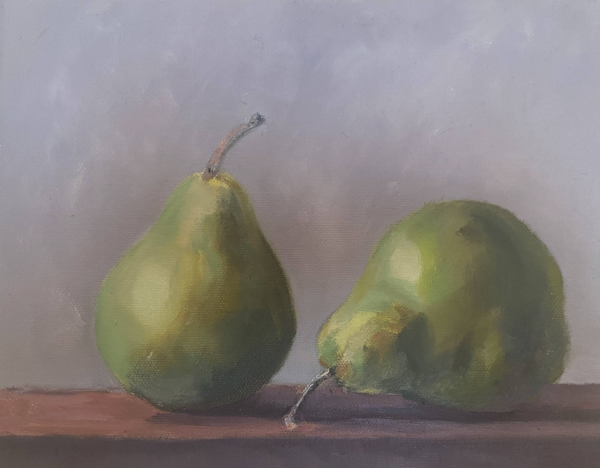
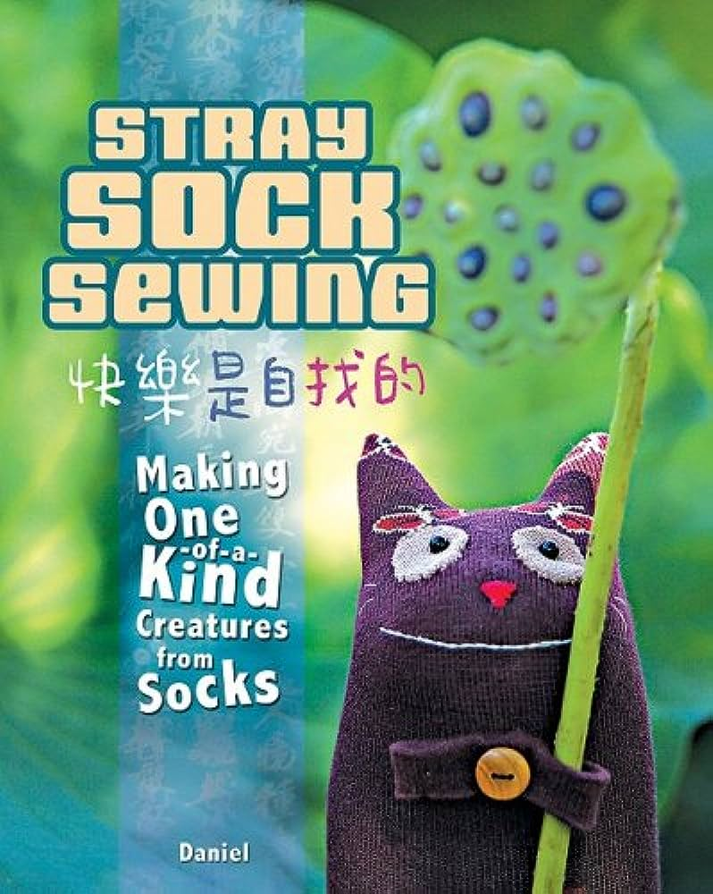

Done for East Asian Lit class. The class consisted of analyzing classics such as Journey to the West and Dream of the Red Chamber (Chinese), Tale of Genji
(Japanese), The Memoirs of Lady Hyegyeong (Korean), poetry, and modern novels such as The Old Capital, two novels with the same title by Yasunari Kawabata and Chu T'ien-hsin.
This film was analyzed as it is based off of The Life of an Amorous Woman, a novel depicting the struggles of women in Edo Japan.
Presentation on Neuschwanstein Castle done for intermediate German course.
Painting based off of a picture I took of the local forest preserve.
My first oil painting done during an extracurricular class.
Patterns from: Stray Sock Sewing by Daniel 